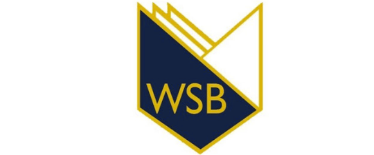

<ion-app>
  <div class="loader-container" #splash [hidden]="!routerHidden">
    
    <svg class="spinner" style="z-index: 999" stroke="#000" width="200" height="200" viewBox="0 0 206 206"
      xmlns="http://www.w3.org/2000/svg">
      <defs>
        <clipPath id="cut-off-bottom">
          <rect x="0" y="0" width="200" height="100" fill="#000" />
        </clipPath>
      </defs>
      <circle class="path" fill="none" stroke-width="6" stroke-linecap="round" cx="103" cy="103" r="100"></circle>
    </svg>
  </div>
  <ion-router-outlet [hidden]="routerHidden"></ion-router-outlet>
</ion-app>
